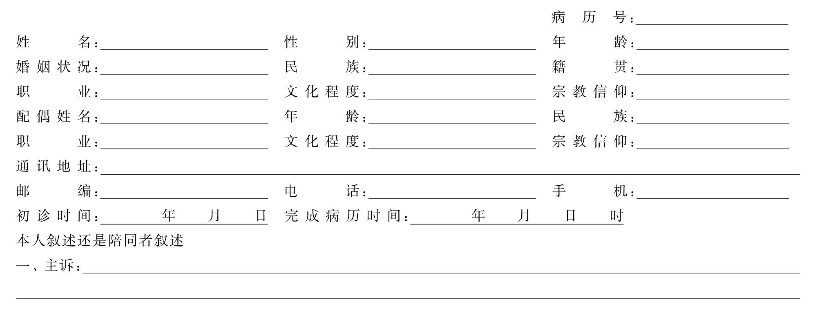

性咨询及性治疗室的规划与配置应注意到患者特殊的心理需求，同时应具备性咨询、性教育、性心理和常见器质性疾病诊疗的能力。因此，性诊疗室在医院门诊应作独立配置，最好具有单独的通道和相对安静的环境，以便尽可能地减少环境因素对患者的干扰。
宜稍宽大。接诊护士态度应亲切、诚挚，可简短回答询问和介绍有关情况，特别强调严谨的工作作风和保密制度。尽可能满足初诊患者的各种心理需求，如要求知名专家接诊，要求女医生接诊，要求隐私保密以及在时间安排和治疗经费等方面的希望等。待诊室内可提供一些性生理、解剖、心理和常见性生殖疾病的科普读物供患者读阅。另外，待诊室可以允许丈夫或亲友陪伴，目的在于为患者在接触治疗医生前，提供一个舒缓情绪的过渡空间。
是性治疗医生采集病史，进行性咨询、性教育和一般心理治疗的地方。因此应相对隔音和避免打扰，包括护士在内的其他医务人员若无特殊必要亦不宜随便进出。诊断室最好布置成客厅式而不是一般医院的诊断室式，尽量创造出一种轻松、舒缓、不会令人紧张的和谐环境，以利于患者消除疑虑并在短时间里和医生建立起相互信任和理解的关系。
基本设施同男科或妇科检查室。此外应配备身高体重测量仪，测量用的硬尺、软尺，观察用放大镜以及用于微生物病原学检测留取标本的各种条件。在女性学专用设备中妇科B超是必备的，因其对常见妇科疾病和监测卵泡发育情况是不可缺少的检查手段。阴道镜也是必备设备，最好还能配备阴道压力测试仪。
依据其功能又可分为：
应按护理的要求配备，并相对无菌。
用于阴道冲洗、上药等用。
如妇科微波、激光及波姆光治疗仪，用于阴道炎、宫颈糜烂、尖锐湿疣及盆腔炎等的治疗，还可配备乳腺疾病的诊疗仪等。
是开展行为疗法的专用场所，所以也是一种心理治疗室。该室应设在相对隐蔽和不受外界干扰的地方。室内光线应柔和隐蔽、色调淡雅，温度应在24～28℃间，尽可能营造一种温柔、放松的氛围。
设施首先是具备一张较宽大的床，头侧应有软靠背以利患者半坐卧位。应配备一面手持的小镜子，以供女性观察自身的会阴部。面对床头需配置电视机、DVD和音响设备，以便患者（或夫妇）观看有关行为疗法的影像教材。此外，还需配备一间稍宽大的洗浴室，除淋浴设施外，应专门安放一面150cm×50cm大小的立式镜子，以供患者对自身裸体的观察和欣赏。
另外，性感集中训练室内至少需从两个角度安置摄像监视器，并与旁边的治疗师监控室相连，治疗师可隔墙观察，并通过麦克风对患者进行指导。除非有必要并获得治疗者的同意，治疗师一般不进入性感集中训练室，这样可减少因医生直接进入室内而对患者心理和情绪产生的干扰。特别是对单个异性患者尤需慎重，必须有同性别医护人员的陪同，这也是在我国开展性感集中训练工作时一定要遵循的原则之一。
性治疗是一个专业性很强的工作，对性治疗师的要求主要包括专业知识、心理素质和职业道德这三个方面。
对性治疗师的知识层面要求十分广泛，除与泌尿外科、妇产科、心血管内科、内分泌科等相关的性生理、病理、解剖等医学知识外，还需要掌握性心理、性伦理、性法学、性社会学以及婚姻家庭治疗学等相关的科学知识，尤其是需要熟练地掌握和运用与性功能障碍和性心理障碍有关的基础知识，这样才能对患者的性问题进行全面的评估，以给予最恰当的治疗。
对性治疗师心理素质的要求包括以下三个方面。
（1）观察能力：在人际沟通过程中，非言语方式往往大于言语方式所传达的信息量，因此性治疗师需要具备良好的观察能力。比如患者的面部表情、目光接触、肢体动作、语音、语调、语速等非言语信息，均对心理评估有着重要的意义，这也是强调性治疗师观察能力的重要原因。
（2）人际沟通能力：性治疗主要依靠治疗师和患者的人际交往完成。如果治疗师缺乏沟通能力，就可能在评估和治疗的过程中遗漏某些重要信息，影响性治疗的疗效。良好的沟通能力取决于治疗师对待患者的态度以及沟通技巧的训练和实践经验的积累。性治疗师应当平等、尊重、诚恳、热情地对待患者，要站在患者的角度去体会、理解和分享他们的情感体验，让患者感到被理解和接纳。患者只有感到安全、舒适时才会敞开心扉，畅所欲言。
（3）自我认识能力：性治疗师应对自己有比较客观、明确的认识，清楚了解自己的价值取向、道德标准、宗教信仰、情绪状态、兴趣爱好等因素。当患者与治疗师的观点不一致时，治疗师应尊重他们，并且注意不要把自己的价值观念强加给他们。只有具备良好的自我认识能力，性治疗师才有可能对患者有一个客观的认识和评价，才能够做到真诚地接纳患者，提高性治疗的疗效。
性治疗涉及的都是患者绝对隐私的东西，因此性治疗师首先要尊重患者的隐私，特别是尊重异性患者。在性治疗的过程中，治疗师有可能会受到来自患者的性吸引，这就更加需要治疗师具备良好的自我控制能力，严格遵守在性治疗过程中的一切道德规范，必要时可建议患者转诊以防止诸如移情现象的发生。
随着我国物质和文化生活水平的不断提高，越来越多的人希望改善性生活质量或解决他们的性问题，都积极向医生咨询以寻求帮助。这时医生所起的作用就是接受患者倾诉和回答相关性的问题。通常性咨询的内容包括与配偶在性交频率、偏好和感受方面的冲突，各种性功能障碍，婚姻情感方面的不和谐，对子女的性教育方式，以及对避孕、不育和防治性传播疾病的知识等。
由于性咨询往往是性治疗的前期工作，所以此时的医生只需掌握心理疗法和性治疗中的主要内容和常用方法，而不必要求他们具备处理所有类型的性问题的能力。因此即使在非专业的性治疗机构如心理诊所等都可进行性咨询。当然在初步评价患者与性有关的问题之后，医生应客观判断自己是否有能力胜任和有效处理这些问题，若有困难就应及时转诊到有经验的性治疗机构。
由于我国医科院校尚未广泛开展性医学专科教育，因此多数医生未受过心理治疗、婚姻咨询或性治疗方面的专业培训，但他们却有能力、有义务成为一名健康性知识的宣传教育者。如对男性应破除“缩阴症恐惧”以及“阴茎大小决定了性能力”等谬误观念，而在女性除宣传经期、孕期的性保健知识外，还应特别强调阴蒂、G点等性敏感区功能的重要性和适度自慰的合理性等。对于有经验的治疗师而言，就可根据患者的具体情况有针对性地作出更深入和广泛的性知识和性技巧的教育。
要想成为一个心理治疗专家就必须具备临床心理学、精神病学的专业知识，在处理婚姻和性问题等内心冲突时，常常要上溯到早期生活中发生的事，此类经历往往是创伤性的，如乱伦（事实上的或幻想中的）、强奸等。也可能是对父母中异性一方的过度依恋（恋父或恋母情结）而产生的罪恶感，这些均需要深层次的精神分析的帮助。因此，对一个心理治疗专家来说，必须具备较高的心理和精神病学专业素养和实践经验，才能运用心理动力学的手段来实施治疗，以取得良好的效果。
在开始性治疗之前，应区分婚姻关系失调和性问题的因果关系。若性问题是引起婚姻关系不和谐的原因，那么性治疗痊愈后婚姻状况自然就会改善。如果性问题是婚姻关系不和谐而引起的，就必须先处理婚姻关系。婚姻治疗在心理治疗学中已形成一门新兴的学科，因此处理婚姻问题也需经过专门的训练。对多数医务人员而言，若缺乏这方面的专业训练，往往需求助于有经验的婚姻治疗学家。
性治疗是指包括个人的性问题和婚姻治疗技巧在内的心理疗法的统称，因此对性治疗师的要求是比较高的。除应具备较全面的专业知识和实践技能外，还应正确分析自身的性观念、感受和对某些性行为所持的道德评判。由于患者对性治疗师的态度十分敏感，性治疗师的某些固有观念可能对治疗产生消极的破坏作用。因此，性治疗师必须不断地提高自己，在使性治疗技巧日臻成熟的同时，通过不断地自身剖析来去除某些固有的偏执观念，才能更坦然地面对各种性行为，处理好患者所面临的各种性问题。
性咨询（sex counseling）是指性咨询师给那些对性有困惑或苦恼的来访者以指导和帮助的过程。通过咨询，性咨询师能够帮助来访者解决其对性问题的困惑或苦恼，减轻其病痛，从而促进其身心健康的发展。性咨询在我国尤其强调性知识的教育，因为相当一部分来访者的问题仅仅是由于缺乏正确的性知识所造成的。因此，给予必要的性知识教育，帮助他们学会放松与沟通，树立自信和消除自卑，以及改变不良的性行为方式等，是性咨询的关键。
（1）门诊咨询：在综合医院、精神卫生中心、心理诊所和卫生保健部门均可设置性咨询门诊，接待来访者。这种形式可与来访者进行面对面的对话，所以咨询能够深入，一般效果较好。
（2）信函咨询：多为外地性咨询者。这种方式可以克服“羞于启齿”的弊端，但也同样存在不能面谈的诸多不便，难以深入探讨问题和给予具体指导。
（3）电话咨询：对一些不愿面谈和怕暴露身份的人，或因交通不便无法到门诊咨询的人，电话咨询也是一种及时有效的咨询方式。
（4）专题咨询：专家在报刊、杂志、电台、电视台等进行性专题讨论和答疑。这种形式的咨询，还具有对健康性知识进行宣传的科普教育作用。
（5）网上咨询：现在许多网站开始提供网上性咨询服务，通过论坛或在线咨询的形式解答网友的性困惑。随着电脑网络的普及，这一咨询方式有着广阔的发展前景。北京回龙观医院邸晓兰应用这种网上咨询形式进行心理治疗，取得了很好的效果。有的专家则应用博客（blog）来宣传健康性知识和解难答疑，如我国马晓年的博客就拥有很高的点击率。
（1）理解与支持：来访者希望通过专业人士的咨询和帮助，解决他们的性问题。他们对咨询师抱有很大的希望，同时也可能存在某些担忧和疑虑，担心咨询师不能理解他们的苦衷，也担心不能解决他们的问题。因此，咨询师要热情诚恳地接待来访者，向他们讲明性咨询的基本精神和原则，鼓励他们消除顾虑、畅所欲言，咨询师还必须给予他们必要的心理支持。
（2）耐心倾听，鼓励疏泄：倾听是性咨询的重要步骤，只有认真倾听，才能了解来访者存在的问题，而且认真倾听本身就能缓解来访者的心理压力，有一定的治疗意义。在倾听的过程中，咨询师一定要专注、耐心，不要随意打断对方的谈话，并及时给以鼓励，使其能够宣泄自己内心的困惑和痛苦。
（3）解释得当，提供知识：来访者的痛苦常常是因为性知识缺乏造成的，咨询师可以通过自己掌握的性科学专业知识来解除或减轻来访者对性的困惑和烦恼。但在来访者的问题没有明确之前，不要轻易回答。咨询师的解释要言之有理、分寸恰当，不要简单草率地敷衍来访者，切忌发表模棱两可、没有根据的咨询意见。
（4）尊重来访者，严守秘密：性咨询的内容都涉及来访者的隐私，很多人不希望被其他人知道。因此咨询师应尊重来访者的意愿，对与来访者会谈的内容严格保密，不得随便谈论。在未得到来访者允许的情况下，也不得随便透露给他/她的家人。这也是性咨询业健康发展的重要保证。
良好的医患关系是性咨询成功的关键因素。咨询师要满腔热情，同情关心来访者，还要有精湛的技术和高尚的职业道德。熟练运用倾听和晤谈技巧对尽快建立相互信任的医患关系是十分必要的。
进一步了解与核实来访者的具体问题以及心理社会背景，查清问题的来龙去脉，评定症状的严重程度。要注意三个区别：其一是区别属于一般的性问题还是病理的性问题；其二是区别由心理因素所致还是器质性因素所致；其三是区别来访者有无主动求治的愿望。在明确了这三点之后才能着手制订和实施咨询计划。
性咨询需要确定咨询目标并制订计划和策略以达到目标。要做到这一点，必须详尽地收集可靠的材料，经过分析比较，找出关键问题。为了帮助来访者分析和认识问题，常用的方法有询问、提出问题并要求来访者自我解释、对来访者的诉说进行准确的有重点的复述，提醒来访者注意可能与其有关但易被忽略的因素等。咨询的目标要与来访者协商确定，借此可以调动来访者的积极性。
这一阶段是性咨询中最有影响的环节。在这一阶段，咨询师根据来访者的具体问题确定方案，通过分析、解释、指导、训练等方式来影响来访者。来访者积极参与这一活动，开始理解、领悟、模仿、学习新的认识方式和行为方式，向目标方向取得积极的进步。
对于一般的性问题，主要是对来访者进行有关性生理、心理知识教育和行为指导，咨询后的效果是比较明显的，如对手淫、遗精等问题的疑惑。有少数问题，如老年期性问题、性病来访者的心理压力等，则需要家庭及社会的配合，并需要帮助来访者协调人际关系。
患性功能障碍的来访者除了一般咨询外，还需要进行特殊的性治疗。当然这要考虑他们本身有无求治的要求。如果来访者能够配合治疗，适当选用一些简单的性治疗方法就能取得一定效果。对较重的性功能障碍或性心理障碍的来访者的处理，已超出了一般性咨询的范围而属性治疗的范畴。因此咨询师如果感到处理困难，可以建议来访者找有经验的性治疗师进行治疗。
在这方面我国和西方发达国家存在很大差距，不少性功能障碍患者就仅仅是因为性知识缺乏而造成的。所以，性知识教育也是性治疗的重要组成部分，而且有些知识和观念是患者在开始其他治疗前必须获知和具备的。
（1）树立性是以大脑性中枢为中心，而以皮肤为终末器官的观念。这是在否定了几千年来认为“性的中心是生殖器”的错误观念后，当代性学的一大发展。在广义的性观念中，生殖器仅是最敏感的部位之一，而在生殖器之外还存在其他的性敏感区，性行为也并不仅仅限于生殖器的接触。这就为性交前、后爱抚的必要性和丰富多彩的性技巧提供了理论基础。在这种观念的指导下，人类性生活的质量有了很大的提高。遗憾的是，在我国仍有大部分夫妇认为生殖器接触是性活动的唯一方式，加之由男性主宰性活动的传统观念，使众多中国妇女失去了应有的性乐趣。因此，在性知识教育中首先应树立起正确的性观念。
（2）了解男、女性心理的特点：婚姻虽使一对男女结合在一起，但彼此对男女间存在的性心理、生理差异都往往不了解。如在感觉器官对性刺激的敏感性上，男性对视觉比较敏感，对与性有关的影视、照片、图画和外露的女性酮体等有较强的性刺激感受，这在临床上已作为判断器质性或心理性勃起功能障碍的手段之一。而女性则更侧重于听觉，缠绵的情话，示爱的语言。再如对性的感受上，男性侧重于性器官的刺激，往往以追求性交和射精为目的，所以有嫖妓现象的存在。而女性更注重感情，做爱除生理上的需求外，更是一种情感表达的方式。因此，女性的性唤起必须具有相应的感情基础，每次做爱丈夫都应先培养起应有的情调，尽可能满足妻子情感上的需求。相反，丈夫若只顾满足自己性器官刺激的需要而忽视了妻子的正当情感需求，就有可能构成导致妻子性功能障碍的原因。
（3）纠正一些常见的错误认识：①性器官肮脏论：女性和男性不一样，除去白带、月经、尿液等异味造成的生物学因素外，还有来自童年与小男孩相比缺少阳具而产生被“阉割”的自悲，所以很少有女人会自觉地去欣赏自己的外生殖器。事实上清洁后的女性外阴和身体的其他部位并无什么两样，阴道因为有自洁作用更是相对干净的。②手淫有害论：男性有手淫经历是普遍的现象，但我国女性有手淫经历的仍是少数。从性治疗学角度来看，女性手淫比男性更富有积极的意义。因此，从某种意义上讲它是每个已婚妇女都应掌握的技巧。特别是在进行性治疗前，必须彻底纠正手淫有害的错误观念。③阳具崇拜：这是源自原始人类对性崇拜的一种延伸。在女性，由于自身缺少阳具，所以对丈夫的阳具十分珍视，虽然在正常解剖范围内的阴茎长短和粗细在性生理上并无特殊意义，但对部分妇女却有着心理上的影响。这种抱怨丈夫阴茎短小的现象在临床上绝非少见，几乎都发生在有性经验的女性身上，有时单凭性知识教育很难说服此类患者，必须找出深层次的心理问题并通过行为疗法，调整好性交姿势和技巧后才能解决。如一离婚后再嫁的妇女来院就诊的主诉即是丈夫阴茎短小，经检查其丈夫阴茎完全正常。经深入晤谈后了解到该妇女还存在着对前夫感情上明显的眷恋，在赞美前夫身材魁梧、性欲强烈、阴茎粗壮、性能力超强的同时，对现丈夫相对柔弱、温文尔雅、欲望不强、持续时间太短的性行为采取了不认同并归咎为阴茎短小的说法。
总之，健康的性知识教育是心理咨询的主要手段之一，也是开展其他治疗方法前必经的过程。性咨询师应通过耐心地倾听和提问，找到患者存在的主要心理问题，有针对性地进行强化和教育，为制定进一步的治疗计划打下基础。
倾听是一项十分重要的技术，然而并不是所有医生都懂得如何去倾听。掌握倾听技术是对每一位性咨询师的基本要求。
（1）保密承诺：尽快和患者建立起相互信任的医患关系，这是性咨询在采集病史、倾听患者陈述之前首先要做到的。为达到这个目的，性治疗医生在开场白中可以简单介绍一下科室和自己的情况。如科室雄厚的技术力量以及自己的学位、从事性治疗的经验和学术成就等，让患者知道医生有能力和信心来处理好他/她的性问题。同时要对科室严谨保密的规定作充分的说明，如性医学科的病历是不归入医院病案室，而是由科内专柜保管的，任何人不得随意调阅。甚至强调即使是夫妻间存在的隐私，也会受到充分的尊重和保密等。在此基础上，性咨询师通过端庄亲切的仪表，富于同情和理解的语言，是完全可以在短时间里和患者建立起相互信任并倾心交谈的合作关系。在以后的晤谈和接触中，医生要随时注意自己的形象，始终维护患者对自己的信任和对治疗的信心，这将是取得满意疗效的保障。
（2）倾听的主要程序：常用的四种倾听技术是澄清、释义、情感反映和总结。澄清是在来访者发出模棱两可的信息后，对来访者所提问题的反应。它开始于“你的意思是……”或“你是说……”这样的问句，然后重复来访者先前的信息。释义是把来访者信息中与情境、事件、人物和想法有关的内容进行逻辑组合，找出与性问题相关的因素。情感反映是对来访者的感受或信息中的情感内容重新加以编排。信息中的情感成分通常揭示出来访者对有关内容的感受，比如来访者可能对自己在性生活中的表现（内容）感到失望（情感）。而总结则是释义和情感反映这两种反应的进一步延伸，它把信息的不同内容或多个不同的信息加以链接，并重新编排。
（3）细心观察、耐心地倾听：在咨询会谈中，咨询师除了要倾听来访者的谈话之外，还要注意观察来访者的非言语行为，以协助了解来访者的情绪、情感和内心的真实思想。非言语行为包括面部表情、躯体动作和副语言等。在咨询过程中，咨询师需要对这些非言语行为给予仔细观察和理解。当患者开始陈述自己的性问题时，医生要专注倾听，不要轻易打断，可以用点头或偶尔重复一句患者的话来表示自己是听懂了。在回答问题之前，应让患者把他/她所有的问题和想法都讲清楚，很多女患者在谈到因性问题（自己的或丈夫的）而受到的困扰或委曲时都会哭泣，这时医生应在理解的基础上以关切的态度让她休息一下，待平静后再继续谈。切莫在患者情绪不稳定时急切提问，更不要在未倾听完患者的陈述时就主观下结论或作出判断。这和内外科以问诊为主的采集病史不一样，医生首先要十分耐心的听取来访者对性历史的陈述，这是性咨询的一大特点。
（4）尊重来访者，不要强加于人：性咨询师自己首先要树立正确的性观念，以科学和客观的态度来看待患者的性问题。当来访者谈到自己的隐私时，医生要以落落大方、从容不迫的态度仔细听取，绝不能表现出惊异、拘谨、冷漠或轻浮，这样才能使来访者放心地进一步谈出内心深处的问题或感受。
有的来访者在陈述中谈了很多和配偶的生活琐事而始终未谈到性问题的实质，使医生听后不得要领，这时医生也可作一些提示。但要避免打断话头，先入为主的高谈阔论。即使发现来访者存在一些错误的性观念也不要急于纠正，可留待以后的晤谈和治疗中去解决。更不要试着用自己的性价值观去强加给来访者，甚至要求他\她以此来评价和表述自己的性问题。
总之，倾听技术要求性咨询师把自己摆在和来访者平等的位置上，在相互信任和轻松和谐的气氛中，耐心倾听患者的陈述。除非很有必要的提示，医生要避免对来访者的打扰。这种仔细倾听是作出正确评价的基础。
晤谈是继倾听后采集病史的第二项必备技术。它是一种以患者自述为中心的谈话技巧。
（1）晤谈的主要内容：晤谈首先要听取患者介绍目前存在的问题和通过问诊找出隐蔽的问题。一旦确认患者确实存在性问题后，就应依次了解下列情况：①患者主要的性功能障碍表现是什么？它是突然发生的还是逐步加重的？已持续了多长时间？②导致性功能障碍的病因可能是什么？如意外事件、吵架、婚外恋、工作压力等。还应注意有无引起器质性性功能障碍的因素，如阴道炎、附件炎及经绝期后内分泌改变的影响等。③患者对性生理、解剖和心理知识了解多少？这在中国是有普遍意义的问题。如对性器官的认识，以及对手淫的态度等。④除性功能障碍外，还有什么性方面的问题？如手淫的方式、频率，婚前或婚外性生活的情况？有无同性恋倾向等。⑤配偶的性功能状况，是否存在交流不够或婚姻问题？⑥患者夫妇间还存在哪些非性方面的问题？如经济问题、性格问题和与家庭其他成员的关系等。⑦是否在它院作过诊治？用过何种药物或治疗措施？疗效怎样？⑧患者来院就诊的真正动机是什么？对治疗的信心和耐心有多大？⑨患者要想达到的治疗目标是什么？这些目标是否现实？⑩患者是否存在病态心理或精神疾病？当然，上述问题只是采集病史时应了解的基本情况，对每例患者的具体情况，性咨询师都应作出有针对性的深入晤谈，包括对有深层心理问题的来访者进行耐心的心理分析。
（2）常用的晤谈技术包括提问、解释、提供信息、即时化、自我暴露和对质。提问是提出开放性或闭合性的问题，以便从来访者那里寻求详细的解释或信息。解释是在来访者的讲述中找出主题和模式，使来访者隐含的信息更清晰地显现出来的一种反应技术。提供信息是指与来访者交流有关经验、事件、行动选择或人物的资料和事实，即时化是在咨询面谈中对当前正在发生的事情作出的言语反应。自我暴露是与来访者分享个人的信息或经验。对质技术指的是指出来访者行为和言语表达中的矛盾或不一致之处。
（3）分阶段进行：马斯特斯和约翰逊等西方性学家一般把晤谈分成逐步深入的三个单元来进行，也即每周一次，分三次门诊来完成。这既是病史采集过程，又是进行心理辅导、性知识教育和对性问题作出评价并制定治疗计划的过程。在每个单元实施前最好先拟定一个晤谈计划。首先通过倾听为患者存在的问题作一个假设，而后为晤谈确定一个目标，并安排出晤谈的内容和顺序。由于每次晤谈的时间最好控制在45分钟，这种预先拟定的计划将有助于性咨询师控制进程和达到预期的效果。三个单元的具体安排是：第一单元首先请患者夫妇尽可能地提出他们的问题和希望，而后留下一位进行单独晤谈。另一位则留作第二单元进行单独的晤谈。第三单元由夫妇双方共同参加，在治疗医生的参与下鼓励他们相互交流、讨论双方性问题之所在和可能的诱因，确定治疗目标和制定治疗计划。
不过在中国由于文化和经济等因素的差异，西方的这种晤谈模式不完全适用。很多来访者不能坚持三周的门诊随访，特别是远道而来的夫妇或配偶对性治疗并不热衷时，往往在初次门诊后就因“收获不大”而放弃治疗或改往它处就诊。针对这种情况，笔者在基本参照三单元晤谈原则的基础上对晤谈次数作了压缩。若是患者夫妇同来就诊，就先用半小时左右了解一般概况并和患者建立初步的医患合作关系（第一单元）。而后留下妻子单独晤谈约半小时，丈夫此时作男性学体检。接下来由丈夫单独晤谈约半小时，妻子作女性学体检，必要时夫妇双方在专科护士指导下填写有关自我报告调查问卷（第二单元）。最后待性咨询师/性治疗师汇总已掌握的资料后，再请夫妇双方一起讨论有关问题，并由医生作出初步诊断和治疗建议（第三单元）。总共需2～3小时。在来访者夫妇下一次就诊前，性治疗师可根据需要，先单独安排妻子或丈夫来院进行深入的晤谈，以便对初次就诊采集的病史作出补充。这种相对集中的采史方法虽一次性耗时较长，但为多数患者夫妇所接受。事实上我国多数患者的性功能障碍都和婚后家庭及社会因素有关，并无每例均需花很多时间去找寻深层心理问题的必要。因此，为了患者的利益，尽快抓住问题的核心，建立起患者的治疗信心才是最重要的，完全没有必要拘泥于国外性治疗晤谈的典型模式。
（4）注意提问的技巧：晤谈和倾听不一样，它是在医生的提问下和患者进行交流的过程。提问时一定不能采取刨根问底式的问诊，而应充分尊重和保护患者已经很脆弱的心理，并遵循以患者自述为中心的晤谈原则。因此提问最好以委婉或诱导的方式进行，让患者以比较轻松的节奏来陈述他们的问题。
很多患者在表达性问题时是比较隐晦的。医生为搞清情况提问时可遵循由“学习”到“态度”再到“行为”的程序。如要想了解手淫情况就可先问：“你是从哪里知道有关手淫行为的？”而后问：“你觉得男孩子（女孩子）手淫有什么问题吗？”最后问：“你是否尝试过？”而不要一开始就问：“你手淫过吗？”使得一些敏感的患者难以启齿。
医生在提问前也可先作些陈述，表明自己对一些性问题的看法，以消除患者的疑虑和窘迫感。如医生可以说：“现在婚外性行为已相当常见，你对此有何看法？有没有这方面的经历？”或者问：“很多自慰器具对促进性快感和体验性高潮是有帮助的，你同意这种看法吗？是否有这方面的体会？”
对一些涉及个人隐私或可能危及夫妻关系的敏感问题，在询问前一是要先作出慎重的保密承诺，并在能使患者放心的单独晤谈中提出来。如对乱伦的回忆，婚外恋情及卖淫的经历等。
（5）注意不同晤谈对象的特点：性咨询师/性治疗师在和来访者进行晤谈时要考虑到患者的智力、学历和处世经历的不同而有所区别，不恰当的使用医学或心理学术语不仅不能使问题澄清，还可能使问题混淆。如对只有初中文化程度的来访者使用“性游戏”、“潜意识阻抗”或“性应答功能失调”等术语或诊断，就只能造成患者的困惑甚至误解。对这样的来访者一定要使用通俗易懂但不失科学的语言才能达到沟通和交流的目的。
不同年龄段的来访者也有其相应的特点。如对青、中年女性来说，晤谈的内容往往会集中在婚姻上，因为性与婚姻是分不开的。由婚姻中产生的怨恨、内疚和畏惧常是造成女性性功能障碍的原因。因此对这一年龄段的女性患者，必须认真探讨婚姻和性的相互关系，并找出明显的或潜伏的影响因素。当然，由于妊娠和孩子的出生影响到性的调整，以及工作和家务的矛盾，婚外关系等可能影响到性表现能力的问题，都可能成为晤谈的内容。此年龄段的女性，晤谈内容所涉及的领域相对要广泛些。而对老年女性来说寻求性治疗的唯一目的几乎都是对性功能减退的焦虑，当然也包括对丈夫过强性欲的不理解。在这一年龄段，老年女性来就诊的人数远低于老年男性，而且很多老年女性就诊的原因不是自身对性生活的追求，而是为维系或重建婚姻以获取安全感。老年妇女因受陈腐观念的影响，往往比年轻妇女有更多的顾虑，性咨询师必须抱以十分尊重、理解和耐心的心情来进行晤谈，在没有获得来访者充分信任前，她们将不会暴露真实的想法和感受。
另外，来访者的社会地位、民族和宗教信仰等都会影响到医患关系和晤谈的方式。性咨询师必须综合考虑到这些因素，拟定出来访者能够接受的晤谈内容和进程安排，才能收到预期的效果。
在性咨询的进程中，常常会出现来访者或咨询师对某些特定咨询表现出阻抗的现象，如来访者咨询时无故迟到、推迟或取消约定的咨询等，或治疗师提早结束某次咨询以及阻止来访者要说出的话。一般把阻抗界定为来访者或咨询师干扰咨询过程和结果，或降低其成功可能性的任何行为。为消除阻抗应注意以下几个方面。
（1）鼓励来访者积极参与。在开始性咨询的初期应多给予患者关怀与鼓励，肯定他们的某些观点和进步，让来访者自己选择那些更适合他们生活的咨询计划，从而调动来访者的参与积极性，有助于减少心理阻抗的影响。一旦发现来访者有阻抗现象，咨询师应减少强调自己的影响，相反，要充分肯定来访者的贡献以及尽量要来访者表达自己的意见等。
（2）咨询师要把握好咨询的节奏，也就是咨询的进展不宜太快也不能太慢。如果咨询师前进得太快，来访者对咨询师的某些建议尚难接受，就可能发生阻抗。而太慢又会降低咨询的效率，使来访者感到咨询效果不明显也容易发生阻抗。因此要把握好咨询的节奏，注意避免过早地进行干预。
（3）对于缺乏经验的咨询师，由于担心自己的能力不足而可能出现焦虑，或因对来访者过强的责任感而使来访者的阻抗表现得更为明显。处理咨询师焦虑的第一个有效步骤就是承认它，向同事或导师倾诉出自己的焦虑，并在工作中尽量减少对自身的关注，这将能有效降低焦虑的程度。咨询师还要明确自己在咨询中的界限，区分出哪些是自己应该负责的事情，哪些是应该由访者负责的事情，避免替来访者做他应该做的事情。对咨询的一个常见的误解就是，咨询师总是要为产生改变的各种结果而负全责，这种强加给自己的“责任感”是没有必要也不合理的。
（4）关怀自己，避免同情的疲劳；如果咨询师忙于关心他人的生活而忽略了自己的需要，甚至过度投入工作而导致身心疲惫，那么咨询师本身的阻抗就会变得严重。这种现象，称为“同情的疲劳”，即由于对他人比对自己有更多的关怀而产生的心理和身体精疲力竭的现象。解决这种阻抗的最佳方式是预防发生。可通过合理的安排工作强度和丰富多彩的休息方式，使疲劳和耗竭比较不容易发生。尤需强调的是，不要把工作带回家或者在休息时间仍然沉湎于工作中发生的事情上，这一点对初学者来说是尤其需要注意的。
性咨询或性治疗采集病史的另一主要手段就是来访者填写的自我报告调查问卷。这种问卷是一种标准化的量表，在各类量表中均要求患者应用数字或等级来对自己的心理和行为进行客观和标准化的描述，从而成为倾听和晤谈的重要补充。在精神科它被广泛地应用于对患者的智力、人格和心理状态的评价。因此，它不仅是采集病史的重要组成部分，也是对患者进行心理学检查的主要手段之一。
量表是经专家周密设计和统计处理后拟定的，在特定的范围内提问比较全面、规范，而且经过定量评分就可通过统计学处理使经验性评价上得到定量性评价，从而使性学研究进入一个更加科学和可对不同样本进行比较研究的阶段。但是，由于性学研究涉及的范围十分广泛，不可能用一个量表来概括所有的问题。因此，各国学者针对不同的性学问题设计了大量的量表，并正在不断完善中。这些量表具体可分为三类：
（1）性功能症状评定量表：主要用于对性功能障碍的病状直接打分。这是采集病史时普遍采用的。如：国际勃起功能指数问卷调查表（IIEF），症状自评量表（SCL-90）等。
（2）与性有关的心理社会状态评定量表：此类量表又可分成五种，性治疗常用的是评价婚姻关系的量表。如：Olson婚姻质量问卷（ENRICH），婚姻调适量表（dyadic adyustment scale，DAS），性相互作用调查表（sexual Interaction Inventory，SII）等。
（3）用以评价情绪的量表，如抑郁自评量表（SDS），焦虑自评量表（SAS）和用以评价与性有关的单项能力或特质的量表等。
（4）人格测验用量表：用于对患者较稳定的心理特质打分，如明尼苏达多相人格测验（MMPI），以及对外界环境的反应方式和行为模式测验等。临床上可根据需要选用相应的量表进行测试。
量表在我国性咨询或治疗机构中使用还不够广泛，主要原因是这些量表受西方文化影响很大，不全适用于中国国情，加之各类量表普遍设置的项目繁多，对文化程度较低的来访者来说，存在着理解和判断上的问题。而指导来访者填写自我报告调查问卷又往往给工作繁忙的性咨询或治疗机构增加了额外的负担。因此目前主要用于临床研究或认为有必要进行心理或人格测试时才使用。我国性学家已着手研究适合中国国情的量表，如李学谦设计的“性功能评定量表”和“性满意量表”等，为量表在我国的推广和应用起到了积极的推动作用。
体格检查的主要目的是发现是否有与性功能障碍有关的、病理性改变导致的器质性原因。因此，对通过性咨询明确需作性治疗的来访者进行全面的体检是十分必要的。由于导致或诱发性功能障碍的病变甚多，体检时应按系统有侧重地进行。与性关系密切的常见疾病有：
1.性腺功能低下 如Turner's综合征可出现身材矮小，乳腺发育差乳头间距大，以及盾型胸等畸形，此类患者的性欲明显减退。
2.糖尿病 主要影响男性勃起功能和女性达到性高潮。
3.甲状腺功能亢进或减退 可导致部分患者的性欲增高或减退。
4.肾上腺皮质功能减退 如爱迪森氏病患者大部分都有性欲下降。
5.垂体功能的低下或亢进都可以造成性欲的降低。
因此，体检时应根据病史和一般体检而有针对性地作内分泌系统检查。
心血管疾病对男性性功能的影响已比较明确，而对女性的影响尚缺乏深入研究。但由于冠心病、心肌梗死、心绞痛的患者在性交中或性交后发生猝死的病案时有报导，因此这类疾病对女性性活动在心理上的影响是肯定的。其他如高血压、心力衰竭、主动脉病变等所使用的药物也都可能对性功能产生损害。
肿瘤引起的性功能障碍既可由肿瘤本身所造成，也可由化疗、放疗或手术造成。同时患者患肿瘤后的忧虑心理也是形成性功能障碍的重要因素。因此各类恶性肿瘤对性功能都有不同程度的影响。
各种慢性、消耗性疾病对性功能都有不同程度的影响，体检时应给予应有的重视。如慢性肾衰竭的患者约有80%发生性欲减退，回肠或结肠道造痿后部分患者也出现性交困难。神经和肌肉疾病对性功能影响也是明显的，如脑卒中、截瘫、多发性硬化、重症肌无力等症都会给性生活带来困难。另外，一些少见的关节和结缔组织疾病往往导致女性生殖道溃疡或阴道润滑障碍（干燥综合征），对性功能的影响也十分明显。
因此，性治疗的体检既应是全面系统的，也应是具有针对性的，并且要特别注意与性功能有关的异常发现。由于人类对性学研究的历史尚短，对很多躯体疾病对性功能的影响尚缺乏深入的研究，正如男性学中早期认为勃起功能障碍大多是心理性的，而随着研究的深入现已明确大多数勃起功能障碍是与器质性因素有关一样，在今后的女性学研究中，也应重视器质性因素的研究。所以，临床体检时绝不能因为当前认为大多数女性性功能障碍属心理性的，就放松了对各种器质性因素的探索和研究。
性医学检查主要包括性心理和性器官检查两部分。性心理检查又主要以倾听、晤谈和填写自我报告调查量表的形式进行，下面我们着重讨论性器官的检查。
性器官检查是和性评价以及性治疗结合在一起的，其和泌尿科、妇科检查最大的区别在于它不仅是发现与性功能障碍有关的器质性变化，同时还是进行性知识教育和促进夫妇间公开交流的开始。因此，在一般情况下，只要患者允许，其配偶可以在场。应鼓励双方在体检时交流和提问，性治疗师应给予耐心讲解，并纠正各种认识上的误区和偏见。如正确了解包皮、阴茎长短和粗细在性活动中的意义，以及女性生殖器官的解剖结构、生理功能，消除女性生殖器官肮脏、难看或神秘莫测的误解等。这种由夫妇共同参加的性器官检查，将对以后开展其他性治疗起到奠基作用。
由于男性外生殖器外露，其检查程序基本同于泌尿外科。但要侧重检查第二性征发育情况，阴茎的长短（包括牵拉长）、粗细，有无包皮过长或包茎，有无尿道下裂等畸形，睪丸和附睾的体积大小、硬度，是否有隐睾或精索静脉曲张以及有无炎症、肿瘤、赘生物等。而女性的性医学检查稍区别于妇科检查，现重点介绍如下：
患者以膀胱截石位仰卧于检查床，双腿分开并用脚架托起，头部可垫高，以便患者向下观察。
性治疗师首先要观察阴毛的分布，阴阜、阴蒂、大阴唇、小阴唇及尿道口、处女膜残痕有无异常。在作出初步判断后，可用较明亮的灯光照射外阴部，然后指导患者手持一面镜子观察自己的外生殖器，正确了解各部位的解剖名称和功能。通过这种观察将有助于缓解患者因性无知而带来的性压抑。
除和妇产科检查一样外，对有性交疼痛或阴道痉挛的患者来说，阴道指检和置窥阴器检查很可能让患者难受。遇到这种情况先要对患者作好心理疏导，检查时动作尽可能轻柔并时间要短、动作要快。对多数合作的患者来说，在调整光源后可通过小镜子观察自己的阴道和子宫颈，了解性交射精后精液贮存于后窟窿的部位。指检时可对阴道前壁距阴道口约5cm处的“G”点作加压刺激，以了解“G”点是否明显存在，并告知患者该部位可能存在性敏感区，以及性交时包含“G”点在内的整个阴道外1/3因充血而隆起形成的环状垫，是阴道性交时快感和性高潮体验的解剖基础。对声称缺乏快感的患者来说，性交时集中精力去体验该部位所受到的刺激，并通过心理暗示去认同它为“快感”，是行为疗法的重要手段之一。另外，让患者正确了解自身的阴道，也是纠正一些患者抱怨丈夫的阴茎不够粗长的错误观点的好机会，事实上阴茎勃起长度达8cm以上，就能完成性生活。
此外，性治疗师在检查时若怀疑阴道或白带有异常，可取白带标本作清洁度和细菌学检查。
首先应了解会阴体是否完整，有的经产妇会阴可呈不同程度的撕裂。关于阴道压力（松紧度）可通过专用设备进行测试，阴道压力低于10mmHg提示阴道较松弛有可能影响性感受，高于16mmHg且伴有性交疼痛者可能有阴道痉挛存在。在检查的同时可指导患者学习以耻骨尾骨肌为主的盆底肌群锻炼法（凯格尔法），即在完全放松后让患者收缩阴道周围的肌肉（相当于排尿时突然终止排尿的动作），放松后再次作上述收缩动作，如此反复20次以上，每天至少坚持2～3组锻炼。虽然阴道压力和性满意度的关系尚缺乏深入的研究，但这种锻炼将有助于增加患者在性交时的体验和信心。
由于阴蒂在女性性反应中的特殊地位，检查时应特别注意。医生应轻轻将阴蒂包皮向上翻起观察阴蒂头和体，若有丈夫陪同可邀请其一起观察，并告诉患者和丈夫该部位是女性最敏感的动欲器官，通过刺激阴蒂可使女性获得性高潮。而后，让患者自己用手指触摸阴蒂体会这种敏感性，并鼓励他们回家后自行练习，找到自己最喜欢的触摸方式。
阴蒂常见的问题有炎症、肥大、包皮过长或粘连等。
虽不多见，但一旦出现问题往往需要先通过手术治疗才能进入心理治疗。如两性畸形、无阴道、阴蒂包皮过长或粘连、无孔处女膜或处女膜增厚症，以及影响性生活的阴道横膈、纵隔等。
包括外阴感染、尿道感染、阴道炎、附件炎等。既可是一般化脓性感染，又可是性传播疾病如尖锐湿疣、梅毒、淋病、生殖器疱疹等，还可能是真菌、滴虫等造成的炎症。由于女性性器官在解剖结构上相对隐匿和深藏，特异性和非特异性感染成为女性最常见的器质性因素之一。只要这些感染性炎症引起了局部的疼痛、烧灼或搔痒就会导致性生活困难。当然，由此带来的心理压力也是不容忽视的。此类疾病常需通过实验室检查才能确诊。
生殖器官的肿瘤并非罕见，如外阴肿瘤、子宫颈癌、子宫肌瘤、卵巢肿瘤等，它们既可对性器官造成直接损害，又可因对性腺的破坏而造成性激素的分泌失调（如卵巢癌的广泛盆腔清扫术后）。另外，作为性敏感区的乳腺癌对性功能的影响也是明显的，和全身其他部位的肿瘤不同，性生殖器官的肿瘤对患者的性心理有更加直接的压抑作用。
如尿瘘（膀胱阴道瘘）、粪瘘（直肠阴道瘘）、子宫脱垂等病变，性医学检查时也应予以重视。
总之，性医学检查兼具诊断和治疗的双重意义，处置得当可缓解患者紧张或压抑的情绪，并为今后治疗计划的拟订打下基础。不过在实践中，是否由配偶共同参加要尊重患者的意见，并且最好由有丰富经验的性治疗医生来进行检查和指导。一旦发现或怀疑患者有器质性病变时，不要急于下结论，可考虑适时地让配偶回避，待一切问题搞清楚后再选择适当的方式和患者及家属沟通。性治疗医生通过大方和熟练的性医学检查，特别是引导患者夫妇对性体验的交流，是建立良好医患关系的重要手段。
由于导致男、女性功能障碍的器质性因素众多，临床上应根据患者的具体情况选择性地作超声或实验室检查，常用的有：
B超在男性常用于准确测量睾丸、附睾及前列腺的大小，彩色双功能多普勒超声在血管性ED的诊断中，被认为是诊断动脉性勃起功能障碍的“金标准”。在女性，特别是经阴道B超已广泛应用于对各种妇科疾病的诊断中。
在男性，泌尿外科已做了大量研究，如睾酮低下可能为性腺发育不良，也是中老年部分雄性激素缺乏综合征（迟发性性腺功能减退）的主要确诊依据。对女性有两方面的意义：
（1）对性功能的影响：国外性学家就雌激素对女性性功能的影响曾做了大量研究，由于女性性激素随月经周期的变化而变化，加之各研究样本的非同一性，因此尚无明确结论。不过大多数研究表明除经绝期妇女因雌激素降低而导致阴道润滑力下降外，雌激素水平的降低与性活动之间没有显著的关系。而雌激素水平若有增高，则似有降低性反应的倾向。至于雄激素虽然在女性性行为中的作用和机制仍有待进一步明确，但多数学者观察到当女性雄激素水平升高时，阴道对色情刺激的反应也随之增强，并且有助于“性满足”。因此，在临床上对雄激素偏低的患者适量补给雄激素已是一种常用的治疗手段。
（2）对不育患者的意义：在女性不育症中，下丘脑—垂体—卵巢性腺轴功能的失调是常见病因之一。而不孕症是可能影响女性性功能的心理因素之一。
（1）甲状腺功能测定：常用的检查是T3、T4以及甲状腺I131吸收率测定，可用于诊断甲状腺功能亢进或减退。
（2）肾上腺皮质机能测定：常用的有17-羟类固醇，17-酮类固醇，游离皮质醇及醛固酮等的测定，主要用于诊断肾上腺皮质机能减退症等。
可通过细胞培养或活体组织标本直接制片等方法检查，通过对染色体和性染色体的观察可对遗传性的单基因或多基因病作出诊断，同时也可用于对炎症和肿瘤的鉴别诊断。
主要用于不孕症中各种抗体的检测。如有抗精子抗体存在，表现为血中的IgA与IgG增高，偶尔也有IgM和IgE的增高，若有IgE增高则患者将出现过敏症状，这是少数妇女对精液过敏的原因。
白细胞＞10/HP提示有前列腺炎症的可能，从而影响到男性的性心理。卵磷脂小体＜＋＋提示勃起功能可能减弱。
（1）镜检：清洁度可分Ⅰ～Ⅳ度，Ⅰ～Ⅱ度属正常，Ⅲ～Ⅳ度提示有炎症。同时可检查出真菌，滴虫等致病因素。
（2）细菌培养及药敏试验：可检测出导致阴道感染的致病性细菌菌种及对常见抗菌药物的敏感性。而阴道、宫颈、子宫和附件的炎症，是导致女性性交疼痛的常见器质性原因。
世界卫生组织提出的性传播疾病（STD）已多达29种之多。我国法定有艾滋病、淋病、梅毒、尖锐湿疣、非淋菌性尿道炎、生殖器疱疹、性病性淋巴肉芽肿、软下疳等8种。由于病原体涉及细菌、螺旋体、支源体、衣原体、病毒和昆虫等，其检测手段也包括镜检（光学显微镜、荧光显微镜、相差显微镜、电镜等），厌氧菌培养、抗原、抗体检测，基因增扩以及动物接种等多种方法。由于艾滋病和其他性病的传播在全球范围内呈上升趋势，因此，性传播疾病对男女性功能的影响已日益显现，其治疗措施主要是针对病因治疗和必要的心理干预，这将在专门的章节中详细描述。
包括血液分析、血生化检查（肝功、肾功、电解质等）、尿液分析等，可由医院中心实验室承担。对怀疑有其他躯体疾病的患者，可根据病情选择性地应用。
为方便记录和收集资料的相对完整，笔者在重庆市第五人民医院工作期间制作的病历模式已应用了15年，有一定的参考价值，现介绍如下：
性医学科病历
1.性知识状况：（1）自评：较好□ 一般□ 差□ （2）精液宝贵□ （3）手淫有害□ （4）阳具崇拜□ （5）性器官肮脏□ （6）乱伦恐惧□ （7）怕怀孕□ （8）其他：
2.性欲：（1）正常□ （2）亢进□ （3）淡漠□ （4）消失□
3.清晨或夜间勃起情况：（1）明显□ （2）偶尔□ （3）有勃起但硬度差□ （4）不明显□
4.初次性行为：（1）年龄 岁 （2）性伴侣（现配偶□ 前妻□ 情人□）
5.性交环境：（1）较好□ （2）不受干扰□ （3）易受干扰□ （4）受过干扰□
6.性前爱抚：（1）0～5分钟□ （2）5～10分钟□ （3）10～20分钟□ （4）20～30分钟□ （5）＞30分钟□（6）无□
7.勃起情况：（1）正常□ （2）不坚但可插入□ （3）未射精即疲软□ （4）不能插入□ （5）其他：
8.射精潜伏时间：（1）＜1分钟□ （2）1～5分钟□ （3）6～10分钟□ （4）11～20分钟□ （5）21～30分钟□（6）＞30分钟□ （7）不射精□
9.连续抽动次数：（1）＜15次□ （2）15～30次□ （3）31～60次□ （4）＞60次□ （5）未插入即射精□
10.性交次数：（1） 次/周 （2） 次/月 （3） 月一次 （4）间断同居□ （5）其他：
11.性交方式：（1）阴道□ （2）口交□ （3）肛交□ （4）手淫□ （5）其他：
12.性交姿势：（1）男上位□ （2）女上位□ （3）侧位□ （4）后进式□ （5）变换姿势□ （6）性虐（自虐）方式：
13.避孕方式：（1）安全期□ （2）性交中断□ （3）避孕套□ （4）体外射精□ （5）安环□ （6）避孕药□ （7）未采取避孕□ （8）其他：
14.婚前性行为：（1）无□ （2）有□ （3）性伴侣 位 （4）维持 年 月
15.与前妻或女友性生活情况：（1）满意□ （2）一般□ （3）不满意□ （4）无□
16.手淫史：（1） 岁开始 （2）婚前 次/周、月 （3）婚后 次/周、月 （4）偶尔□ （5）无□ （6）其他：
17.婚外性生活：（1）无□ （2）有□ （3）性感受：（满意□ 不满意□） （4）已断交□
18.影响性生活的其他情况：__________________________________________________________________
__________________________________________________________________
__________________________________________________________________
__________________________________________________________________
19.对现有性生活的评价：__________________________________________________________________
__________________________________________________________________
__________________________________________________________________
__________________________________________________________________
1.无□ 2.时间及医院名称：_____________________
3.特殊检查：_____________________ 4.诊断：_____________________
5.治疗情况：（1）药物□ （2）手术□ （3）其他：
6.疗效：（1）有改善□ （2）无效□ （3）其他：
1.结婚（同居）时间： 年 月 2.性经验时间： 年 月
3.生育情况：（1）长子 岁（2）次子 岁（3）长女 岁（4）次女 岁（3）无□
4.夫妻感情：（1）恩爱□ （2）一般□ （3）冷漠□ （4）已趋破裂□
1.疾病：（1）无□ （2）生殖系结核□ （3）性传播疾病□ （4）前列腺炎□ （5）附睾炎□ （6）糖尿病□ （7）甲亢□ （8）其他：
2.手术：（1）无□ （2）名称： （3）时间：
3.药物史：（1）无□ （2）性激素□ （3）抗肿瘤药□ （4）镇静剂□ （5）麻醉剂□ （6）毒品□ （7）其他：
1.工作情况：（1）一般□ （2）轻松□ （3）劳累□ （4）经常离家出差□ （5）失业□ （6）与领导或同事关系紧张□ （7）其他：
2.经济状况：（1）较宽裕□ （2）一般□ （3）较紧张□ （4）十分困难□
3.嗜好：（1）无□ （2）吸烟 支/日 （3）饮酒 两/日 （4）其他：
4.与家庭成员的关系：（1）融洽□ （2）一般□ （3）紧张□
1.父系母系三代以内有否精神疾病：（1）无□ （2）有□：_________（关系）
2.父系母系三代以内有否有癫痫：（1）无□ （2）有□：_________（关系）
3.父系母系三代以内有否严重心理问题：（1）无□ （2）有□：_________（关系）
1.血压：/ mmHg 2.脉搏： 次/分 3.呼吸： 次/分
4.精神状况：（1）正常□ （2）焦虑□ （3）激动□ （4）紧张□ （5）抑郁□ （6）冷漠□ （7）其他：（言语和行为特征）
5.体型：（1）瘦弱□ （2）一般□ （3）强壮□ （4）肥胖□ （5）第二性征异常□
6.神经系：（1）深反射：存在□ 减弱□ （2）浅反射：存在□ 减弱□
7.其他：
1.阴茎：（1）长度 cm （2）周径 cm （3）牵拉长 cm （4）包皮过长□ （5）包茎□ （6）海绵体硬结□ （7）尿道下裂□ （8）尿道口：正常□ 充血□ 脓性分泌□ （9）其他：
2.阴囊：正常□ 湿疹□ 癣□ 炎症□ 其他：
3.睾丸：（1）位置：左（阴囊内□ 阴囊外□） 右（阴囊内□ 阴囊外□）
（2）大小：左（ ml） 右（ ml）
（3）硬度：左（较坚硬□ 中□ 软□） 右（较坚硬□ 中□ 软□）
（4）触痛：左（有□ 无□） 右（有□ 无□）
（5）鞘膜积液（有□ 无□）
（6）其他：
4.附睾：（1）正常□ （2）胀大：左（ cm） 右（ cm）
（3）触痛：左（有□ 无□） 右（有□ 无□）
5.精索静脉曲张：（1）有：左（轻□ 中□ 重□） 右（轻□ 中□ 重□） （2）无□
6.前列腺：（1）大小：cm （2）硬度：（坚硬□ 正常□） （3）结节：（有□ 无□） （4）中央沟：（消失□ 存在□）（5）触痛：（有□ 无□） （6）其他：
1.尿糖： 2.血糖：
3.前列腺液常规： 4.T3、T4：
5.性激素： 6.其他：
1.性知识状况：（1）较好□ （2）一般□ （3）差□ （4）精液宝贵□ （5）手淫有害□ （6）阳具崇拜□ （7）性器官肮脏□ （8）乱伦恐惧□ （9）怕怀孕□ （10）其他：
2.性欲：（1）正常□ （2）亢进□ （3）淡漠□ （4）消失□ （5）经期性欲：强□一般□弱□ （6）有无经期性交：有□无□ （7）其他：
3.性敏感部位：（1）口唇□ （2）耳根□ （3）颈部□ （4）乳房□ （5）臀部□ （6）下腹部□ （7）大腿内侧□（8）阴蒂□ （9）其他部位：
4.月经史：（1）初潮 岁 （2）周期 天（3）每次持续 天（4）经期紊乱□
5.性交疼痛：（1）轻度□ （2）剧烈□ （3）偶尔□ （4）无□
6.性高潮：（1）经常有□ （2）偶尔有□ （3）无高潮但有快感□ （4）无快感□
7.婚前性行为：（1）无□ （2）性伴侣 位 （3）性经验时间： 年 月
8.与前夫或男友性生活情况：（1）满意□ （2）一般□ （3）不满意□ （4）无□
9.手淫史：（1）无□（2） 岁开始 （3）婚前 次/周、月 （4）婚后 次/周、月 （5）偶尔□ （6）手淫性高潮（有□ 无□） （7）其他：
10.婚外性交：（1）无□ （2）有□ （3）已断交□ （4）满意度（满意□ 不满意□）
11.既往疾病：（1）无□ （2）阴道炎□ （3）宫颈糜烂□ （4）子宫附件炎□ （5）性传播疾病□ （6）其他：
12.影响性生活的其他情况：__________________________________________________________________
__________________________________________________________________
__________________________________________________________________
__________________________________________________________________
__________________________________________________________________
13.对现有性生活的评价：__________________________________________________________________
__________________________________________________________________
__________________________________________________________________
__________________________________________________________________
14.性器官检查：
（1）外阴：①正常□ ②炎症□ ③溃疡□ ④赘生物□ ⑤其他：
（2）阴蒂：①正常□ ②包皮过长□ ③炎症□ ④粘连□ ⑤其他：
（3）阴道口：①正常□ ②松弛□ ③痉挛□ ④瘢痕触痛□ ⑤其他：
（4）尿道口：①正常□ ②炎症□ ③肉阜□ ④其他：
（5）阴道：①正常□ ②炎症□ ③赘生物□ ④G点（明显□ 不明显□） ⑤其他：
（6）宫颈：①正常□ ②糜烂（轻□ 中□ 重□） ③触血□ ④触痛□ ⑤其他：
（7）白带：①正常□ ②黄稠□ ③异味□ ④奶酪样□ ⑤其他：
（8）子宫：①正常□ ②压痛□ ③增大□ ④包块□ ⑤其他：
（9）附件：①正常□ ②压痛□ ③增厚□ ④包块□ ⑤其他：
15.实验室检查：
（1）白带常规： （2）T3、T4：
（3）性激素： （4）B超检查：
（5）其他：
16.阴道压力：（1）静态压力： mmHg （2）自主收缩压力： mmHg
（3）结论：
1.焦虑自评量表：
2.抑郁自评量表：
3.婚姻调节量表：
4.性相互作用调查表：
5.其他量表：
诊断与评估
__________________________________________________________________
__________________________________________________________________
__________________________________________________________________
__________________________________________________________________
__________________________________________________________________
__________________________________________________________________
__________________________________________________________________
__________________________________________________________________
__________________________________________________________________
__________________________________________________________________
医师：__________________